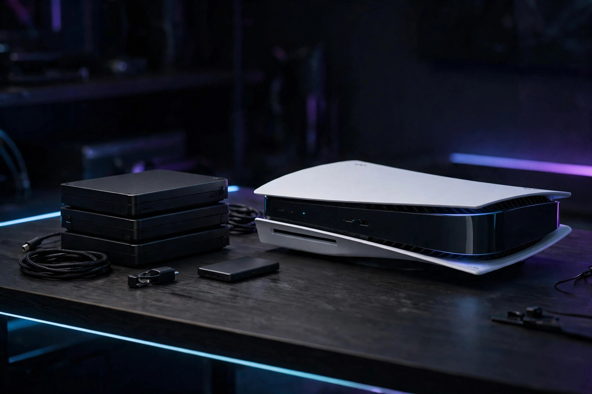
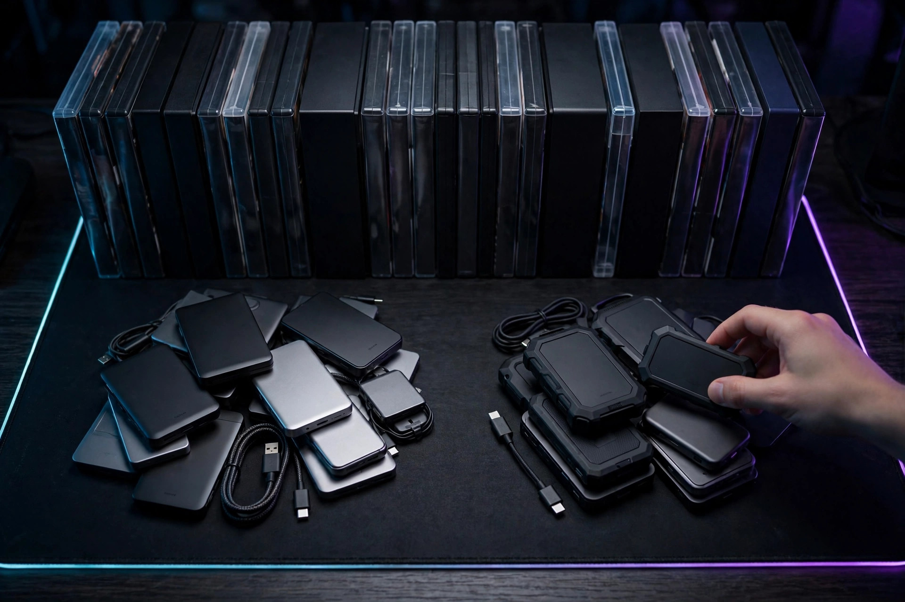

Console storage planning for a large launch install

Most storage advice starts with a shopping list. This guide starts with a confession: Rockstar has not published a GTA VI install size. Not on its official game page, not in its store listing. Anyone who gives you an exact number to clear is inventing one. What can be planned, precisely, is everything around that unknown: how much space your console actually has free today, which of your drives can actually play a current-generation game and which can only store one, and a verified result long before downloads open. Grand Theft Auto VI launches November 19, 2026 on PlayStation 5 and Xbox Series X|S, and storage is the one part of launch you can completely finish in October.
Why this launch is a download for everyone. Rockstar's own store listing says the physical version contains only a download code in the box, with no disc included, so physical buyers can support pre-loading from November 12. In other words, there is no install-from-disc shortcut this time: digital and physical buyers alike need the same free, playable storage, ready a week before launch day.
Start with the number on your console, not the number on the box
The capacity printed in marketing is a starting point, not a plan. PlayStation's official specification for the PS5 lists an 825 GB SSD. Xbox's official specification for the Series X lists a 1 TB custom NVMe SSD, and Xbox's official Series S page lists 512 GB on the Robot White model or 1 TB on the Carbon Black model. System software, other games, apps, and captures all live in that space too, so the only figure that matters is the free space your own console reports right now. Two owners of the exact same model can be in completely different positions — one with room to spare, one already full — which is why the audit below reads the console's Storage screen instead of assuming anything from the model name. Write your number down. Every decision in this guide is arithmetic on that number, not on a rumoured game size.
Playable storage vs archive storage: the rule that decides everything
Consoles now offer two very different kinds of extra space, and confusing them is the most expensive storage mistake available. Some drives extend the space games can be played from. Others are parking: a game stored there has to travel back before it can start. PlayStation states the split plainly in its own support pages — an installed M.2 SSD can download, copy, and launch PS5 games, while PS5 games on USB extended storage cannot be played from the USB drive and must be copied back to console storage first; PS4 games, by contrast, can be played directly from USB. Xbox draws the same line a different way: its Storage Expansion Card plugs into the dedicated port on the back of the console, games can be installed to it by default and played directly from it, and it is designed to match the internal storage's performance. A plain USB drive on either platform should be treated as archive space for a launch game, however fast the drive itself claims to be.
| Storage option | Can a current-gen game play from it? | Official basis |
|---|---|---|
| PS5 internal SSD (825 GB spec) | Yes | PlayStation hardware specification |
| PS5 M.2 SSD expansion | Yes — download, copy, and launch PS5 games | PlayStation M.2 support page |
| PS5 USB extended storage | No — copy back to console or M.2 storage to play; PS4 games can play from USB | PlayStation USB extended storage page |
| Xbox Series X internal SSD (1 TB spec) | Yes | Xbox Wire Series X specification |
| Xbox Series S internal SSD (512 GB or 1 TB, by model) | Yes | Xbox official Series S specifications |
| Xbox Storage Expansion Card (512 GB, 1 TB, or 2 TB) | Yes — install by default and play directly, matching internal performance | Xbox Wire expansion card announcement |
| Xbox USB external drive | Treat as storage, not as the launch install target | Xbox lists USB drives as external storage support, separate from the performance-matching Expansion Card |
Read that table as a filter before you spend anything. If a product is not an M.2 SSD that meets PlayStation's requirements, or is not a Storage Expansion Card for Xbox, it does not add playable launch space — it adds a place to park other games, which is useful, but it is a different job.
Before buying an expansion, verify the specification
On PS5, PlayStation publishes an exact compatibility list for M.2 drives, and the details matter: a PCI-Express Gen4x4 M.2 NVMe drive, Key M, between 250 GB and 8 TB, in one of the listed form factors (2230, 2242, 2260, 2280, or 22110), with a sequential read speed of 5,500 MB/s or faster recommended, and effective heat dissipation such as a heatsink. M.2 SATA drives are not supported. PlayStation also says to install the latest system software before fitting a drive, and warns that formatting a new drive erases it completely. On Xbox there is no equivalent spec sheet to satisfy, because the Expansion Card is a single purpose-built format for the rear expansion port, built on the Xbox Velocity Architecture that carries the internal SSD's 2.4 GB/s raw throughput. The verification habit is the same on both: match the official requirement list first, check a specific product against it second, and only then compare prices at a retailer — no price is quoted in this guide, because none was verified for it.

The decision framework: delete, move, expand, or do nothing
With your real free-space number and the playable-vs-archive rule in hand, work through four questions in order. Stop at the first one that solves the problem.
- Can deleting solve it? If games you have finished, demos, and old captures add up to a comfortable margin over your current free space, deletion is the free fix. Saves are not the install: removing a game you own digitally does not remove your ability to download it again later.
- Can moving solve it? If you want to keep large games close without re-downloading them, move them to archive storage — USB on either platform, following each platform's rules above. This is the right answer when your library matters more than instant access to every title in it.
- Do you actually need expansion? Buy playable expansion — a verified M.2 SSD on PS5, an Expansion Card on Xbox — only if deleting and moving still leave you short, or if your drive is chronically full between launches. A one-game squeeze is a management problem; a permanently full console is a capacity problem.
- Is doing nothing correct? If your audit shows generous free space on playable storage, the right plan is no purchase and no purge. Spending money to solve a problem your own Storage screen says you do not have is the failure this framework exists to prevent.
Series S owners on the 512 GB model should expect to reach question three fastest — the arithmetic is simply tighter — but the framework is identical: the console's own free-space figure, not the model name, makes the call.
The storage audit: a step-by-step procedure
Allow about half an hour. You will know it worked when your console reports the free space you planned for, on a drive the game can actually play from.
- Read the real number. On PS5, open Settings > Storage and note the free space on console storage and on any M.2 storage separately. On Xbox, open the storage devices view in system settings and note free space per device.
- Sort by size. List your installed games largest first. The top few entries almost always decide the audit; small titles and apps rarely move the total.
- Protect what matters. Note any game you are actively playing and any install you cannot easily re-download. Those are the last candidates to move, never the first.
- Apply the framework. Delete what is finished, move what is parked, and only then judge whether playable expansion is still needed. On PS5, games move from the Game Library: highlight a title, press Options, and choose Move Games and Apps. Set a default install location under Settings > Storage > Installation Location so new downloads land on the drive you intend.
- Mind the archive rules. A PS5 USB drive must be SuperSpeed USB 5 Gbps or later, between 250 GB and 8 TB, connected directly rather than through a hub, and only one USB extended storage drive can be in use at a time. Formatting any drive for this job erases it — confirm it holds nothing irreplaceable first.
- Re-verify. Return to the same Storage screen and confirm the free-space figure actually changed by roughly the size of what you deleted or moved. If it did not, a move may have copied rather than relocated, or a download may still be queued.
What success looks like: before November 12, your chosen playable storage shows a free-space margin you are comfortable with, your parked games are accounted for on archive storage or on your re-download list, and nothing about the plan depends on a guessed install size. If Rockstar later publishes the real size, your audit turns into a one-line comparison instead of a launch-week emergency.
Plan for pre-load week, not launch day
The store listing's November 12 pre-load support moves the real deadline a week earlier than the November 19 launch. Finishing the audit in October buys three things: time to order and fit an expansion drive calmly if the framework says you need one, time to re-download anything you deleted by mistake, and a pre-load that starts the moment it opens instead of after an evening of deleting games under pressure. It also protects the rest of launch week: day-one updates and captures will compete for the same space, so a margin, not an exact fit, is the goal. Nobody can tell you today whether your margin is large enough for a size nobody has published — and a plan that admits that is stronger than a precise-looking plan built on an invented number.
FAQ
How much storage will GTA VI take up? Rockstar has not published an install size in the sources used for this guide. Plan from your console's actual free space and the decision framework above, and revisit the number if an official size appears.
Is the physical version installed from a disc? No. Rockstar's store listing says physical versions contain a download code in the box and no disc, to support pre-loading from November 12 — so physical buyers need download space too.
Can a USB drive hold the game? It can hold it as archive storage, but on PS5 a PS5 game cannot be played from USB extended storage and must be copied back first. Keep the launch install itself on internal storage, a PS5 M.2 SSD, or an Xbox Storage Expansion Card.
Which expansion should be bought first? None, until the audit says deleting and moving are not enough. Then buy only the playable kind for your platform, verified against the official requirements in this guide.